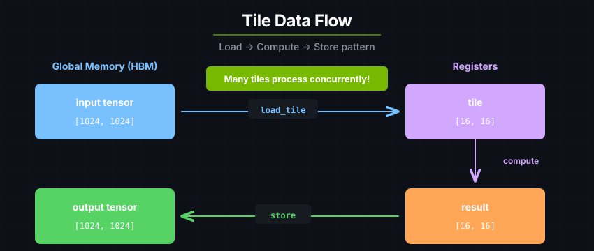

Introduction#
cuTile Rust is a safe tile-based parallel programming model for Rust. Kernels map onto Tensor Cores, Tensor Memory Accelerator (TMA) instructions, and other architecture-specific units automatically, so the same source runs across NVIDIA GPU architectures.
On the host side, the API handles device tensor allocation, partitioning mutable tensors for safe parallel access, and Arc-wrapped sharing for read-only tensors. Kernel launchers are generated from #[cutile::entry] functions and JIT-compiled at first use; subsequent launches reuse the cached binary. Execution is asynchronous and expressed through DeviceOp, a lazy host-side description of GPU work.
A First Kernel#
cuTile Rust kernels are GPU programs that execute concurrently across a logical grid of tile blocks. The #[cutile::entry()] attribute marks a Rust function as an entry point: a function you can call from your Rust program that executes on the GPU.
use cutile::prelude::*;
use my_module::add;
#[cutile::module]
mod my_module {
use cutile::core::*;
#[cutile::entry()]
fn add<const S: [i32; 2]>(
z: &mut Tensor<f32, S>,
x: &Tensor<f32, { [-1, -1] }>,
y: &Tensor<f32, { [-1, -1] }>,
) {
let tile_x = x.load_like(z);
let tile_y = y.load_like(z);
z.store(tile_x + tile_y);
}
}
fn main() -> Result<(), cuda_async::error::DeviceError> {
let device = cuda_core::Device::new(0)?;
let stream = device.new_stream()?;
let x = api::ones::<f32>(&[32, 32]).sync_on(&stream)?;
let y = api::ones::<f32>(&[32, 32]).sync_on(&stream)?;
let mut z = api::zeros::<f32>(&[32, 32]).sync_on(&stream)?;
let _ = add((&mut z).partition([4, 4]), &x, &y).sync_on(&stream)?;
Ok(())
}
main runs on the CPU and launches add on the GPU. The #[cutile::module]
macro generates the host-side launcher for add, whose #[cutile::entry()]
attribute marks it as a kernel entry point.
At first call, the entry function is compiled through Rust AST -> Tile IR bytecode -> cubin. Subsequent calls with the same compiled variant reuse the cached binary.
Kernel Arguments and Launching#
On the host side, the generated launcher accepts several forms for each kernel parameter:
Kernel param |
Host input |
What the kernel sees |
|---|---|---|
|
|
|
|
|
|
Scalar ( |
Same scalar |
Same scalar |
Partitioning splits a tensor into disjoint regions with a fixed tile shape, such as partition([4, 4]) for a 2D tensor. Each tile block receives one partition element, which is how cuTile Rust gives the kernel mutable access to one region at a time while keeping writes non-overlapping.
The borrow-based form (&Tensor, Partition<&mut Tensor>) lets you pass tensors without moving them. The kernel writes through the borrow — no unpartition() or return capture needed.
The simplest launch pattern borrows everything:
let x = api::ones::<f32>(&[32, 32]).sync_on(&stream)?;
let y = api::ones::<f32>(&[32, 32]).sync_on(&stream)?;
let mut z = api::zeros::<f32>(&[32, 32]).sync_on(&stream)?;
// Borrow-based: z is written in place.
let _ = add((&mut z).partition([4, 4]), &x, &y).sync_on(&stream)?;
The launcher also accepts lazy DeviceOp arguments — everything stays lazy until .sync() or .await:
let z = api::zeros(&[32, 32]).partition([4, 4]);
let x = api::ones::<f32>(&[32, 32]);
let y = api::ones::<f32>(&[32, 32]);
let (_z, _x, _y) = add(z, x, y).sync()?;
For chaining, use .then() to compose operations on the same stream:
let result = allocate()
.then(|buf| fill_kernel(buf))
.then(|buf| process_kernel(buf))
.sync()?;
Tensors and Tiles#
Kernels move data between tensors and tiles. Tensors are multi-dimensional arrays in GPU global memory. Tiles are immutable multi-dimensional fragments in registers. A kernel usually follows the same pattern:

Load tensor data into tiles.
Compute on tiles.
Store tile results back to tensors.
Tile shapes are part of the type system, so many shape and dtype errors are caught before the kernel runs.
Use cases#
Use cuTile Rust when:
You need custom GPU kernels not available in libraries
You want to fuse multiple operations for performance
You're building performance-critical ML infrastructure
You need Rust's safety guarantees on GPU code
Don't use cuTile Rust when:
Standard library operations (cuBLAS, cuDNN) suffice
You need maximum portability across GPU vendors
You need tile programming support in Python or C++; use cuTile Python or CUDA Tile C++ instead
Note: For algorithms requiring warp-level primitives, explicit pipelining, manual memory management, or custom CUDA C++ kernels, see Interoperability; custom kernels can participate in the same
DeviceOpexecution model as your tile kernels.
Continue to Host vs. Device Code, or jump straight to the Tutorials.